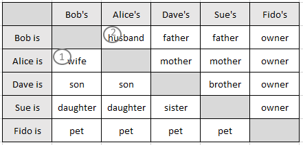
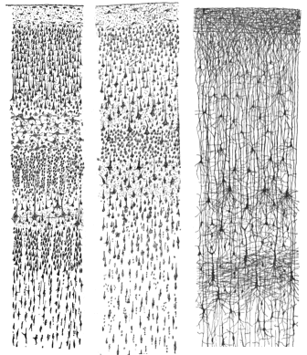

A Neurocybernetic model for systems of neurons is proposed, derived by forming the Cartesian product of the neurons by the neurons, denoted NxN.
This gives an n by n table, where n is the number of neurons in the system.
Considering the system as a state machine, some cells accommodate the states of the neurons, but more importantly, there are cells providing for the state of the synaptic dependency of each neuron on every other neuron.
In this way, NxN models neurons at the systemic level, not just the states of some of the individual neurons in the system.
One cybernetic function performed by an algorithm operating on the NxN data structure is to remember the paths the neuron inputs take through the input configuration space
The NxN model was conceived and developed by Nicholas John Dennis, commencing July, 2021.
One way to analyze the behaviour of any system E of elements, numbered E[1...n], is to consider the Cartesian product of the elements with those same elements, denoted ExE.
This is formed as an inhererently 2-dimensional space, with the elements as values in each dimension, regardless of any dimensionality in the underlying system.
When the elements are discreet, as in a atate machine, the space can be visualized as a table.
The diagonal ExE[i,i] contains the state of E[i].
For a Dependency product, cell ExE[i,j], i≠j, contains the dependency D[i,j] of E[j] on E[i].
The behaviour of the system is modelled by characterizing the dependency of each element on the other elements.
The dependencies each have a direction.
By convention, the rows of the i dimension are the elements as providers of a dependency, and the columns of the j dimension are the elements as recipients of a dependency. In other words, the dependency D[i,j] is from E[i] to E[j].
Each row i represents dependencies from element E[i] to the other elements.
Each column j represents dependencies from the other elements to element E[j].
There is a symmetry across the diagonal where the dependency D[i,j] is a converse of the dependency D[j,i] in some sense.
For example, the Cartesian product of a hypothetical family looks like this:

The diagonal of this Cartesian product is not used.
dependency 1 is read as Alice is Bob's wife or Bob's wife is Alice.
dependency 2 is read as Bob is Alice's husband, or Alice's husband is Bob
After half a billion years of using neural systems to process sensory information and control behaviour, Nature has evolved something like this:

The image is of a microscopic piece of the Cerebral Cortex of the brain. Morphologically, this neural system is a convoluted sheet covering the top of the brain. It's so thin that it would look 2 dimensional if laid flat. The neurons have a high degree of uniformity, both in morphology and operation.
The neurons themselves implement elemental cybernetic functions, so the neual model of the behaviour of the complex objects and dynamics of reality only emerges from the systemic behaviour of the aggregate underlying neurons.
The question is, what to remember.
Perhaps this system uses patterns of synaptic plasticity to maintain a Dependency Cartesion Product of reality.
Neuroscience is the study of biological neural systems, while Cybernetics is the study of synthesized models of control systems.
Neurocybernetics (also known as computational neuroscience, theoretical neuroscience or mathematical neuroscience), is the convergent study of symmetries between neural systems considered as control systems and cybernetic models.
The goal is to find mappings between neural systems and synthetic models where both perform the same cybernetic function.
When a mapping is found, the neural and synthetic systems may be considered, as state machines, to be boundary-equivalent biological and synthetic implemetations of that cybernetic function.
One way to find a mapping is to study individual neurons to dedeuce the function of a neural system as a cybernetic control mechanism.
Another is to propose a hypothetical cybernetic model that could map to a system of natural neurons.
A hypothetical model will be more tenable if each element of the model's data structure maps to a natural neuron component.
The data structure for this model is formed as an abstraction of a natural neural system by a series of rearrangements of the model data elements, so preserving the mapping of natural neural components to model data elements.
First, untangle three of the neurons. Collapse the multiple inputs, outputs, and interconnections between them each into a single entity in the model. Arrange the model elements vertically into input, interconnection, and output segments.

Extract a single neuron with it's pre and post synapses. Model it's inputs and ouputs with connections to the neuron being implied by their being directly below and above the neuron.

Rename the neuron's post and pre synapses to In and Out synapses repectively.
Arrange the neuron components into the cells of a table, such that the neuron's synaptic inputs are in the same row as the neuron, and the neuron's synaptic outputs are in the same column.

Add another neuron to the model, displaced 2 rows down and 2 columns to the right of the first neuron.
Now the neurons lie on a diagonal of the table,
Also, the in and out synapses of the first neuron overlap the out and in synapses, respectively, of the second. The overlaps represent the dependency of each neuron on the other.

There is a square shape implied by the diagonal of neuron bodies. Move the outlying synapses

inside the square.

To form a table.
Continue adding neurons and interconnecting synapses until the table has as many neurons as required.
Then split the cells representing synapses into halves.
The upper half represents the synaptic input to the neuron in that row.
The lower half represents the synaptic out from the neuron in that column.
This is the NxN data structure for 6 neurons.

Each neuron, and it's input, and output, and it's synaaptic inputs and outputs are numbered.
Neuron 3 is selected, shown by the background of the table cells modelling this neuron's input, body, synaptic inputs and outputs, and output being colored blue.
Also, one synapse, representing the dependency from neuron 1 to neuron 5, is selected, shown by the background of table cells modelling this synapse and the from and to neurons of the dependency being colored brown.
This shows the flow of data through the model for neuron 3, which:

1) receives a signal from it's input, and changes state accordingly.
2) detects the state of it's synaptic inputs, and changes state according to a function of the neuron state and each of the synaptic input states.
3) sets each of it's synaptic output states according to a function of the neuron state and the synaptic output state.
4) sets the output state according to the neuron state.
A software NxN simulator was built to experiment with inputs acting via algorithms on the NxN data structure.
The complex biochemistry of natural systems is abstracted to simple numerical state values for the modelled neurons and synapses.
The simulator is driven by the input generator.
Each input can be named to associate it with a real object.
The generator contains the actual dynamics of the inputs within the input configuration space.
Each row contains the state of the inputs at a specific step of the dynamics.
The input dynamics are presented to the simulator engine by consecutively applying the input generator rows.
The simulator engine approximates the parallel operation of neural systems by scanning the table cells, and presenting state information relevent to that cell to an algorithm.
The algorithm applies simple transforms to the neuron and synapse states uniformly, analogous to elementary neural functions.
As an example, the simulator inputs are named alphabetically with a limited baking wordset.
The configuration space of this wordset is the set of all sequences of the words.
Recipes don't use ingrediants in alpabetical order, so the input generator is set to present words in the order they would occur in a recipe to the simulator.
The generator steps are applied in sequence to complete the recipe, during which the algorithm potentiates some synaptic inputs by setting their state to 2.

The potentiations occur in a particular pattern. Each potentiation is a step of the path through the input configuration space taken by the recipe. The path is shown by the red (neuron to synaptic output) and green (synaptic input to neuron) arrows.
The neurocybernetic function implemented by this algorithm on the NxN data structure is to remeber the path the input takes through the input configuration space.
Anyone examining the biological behaviour of individual neurons might not recognize this pattern, although some pairs of neurons would seem to be associative.
Only if the neural system were presumed to be an implementation of NxN would the synaptic patterns of the system be comprehensible.
However, it remains to discover a system of neurons with synaptic behaviour matching this model.
This is free and unencumbered work released into the public domain.
Anyone is free to copy, modify, publish, use, compile, sell, or distribute this work for any purpose, commercial or non-commercial, and by any means.
In jurisdictions that recognize copyright laws, the author or authors of this work dedicate any and all copyright interest in the work to the public domain. We make this dedication for the benefit of the public at large and to the detriment of our heirs and successors. We intend this dedication to be an overt act of relinquishment in perpetuity of all present and future rights to this work under copyright law.
The work is provided "as is", without warranty of any kind, express or implied, including but not limited to the warranties of merchantbility, fitness for a particular purpose and noninfringement, in no event shall the authors be liable for any claim, damages, or other liability, whether in an action of contract, tort or otherwise, arising from, out of or in connection with the work or the use or other dealings in the work.